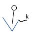
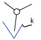
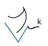
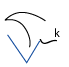
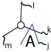
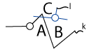
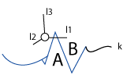
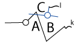
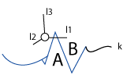

Intermediate Ouwi
Well, grasshopper, you have come this far. In the Introduction, you were introduced to most of the symbols by how they related to the parts of speech. However, relating the symbols directly to parts of speech is only an approximation of how they are used. Here, we will approach Ouwi more within its own constructs.
Linking Serially
When a group of letters are linked serially (called a chain), they are understood in sub-groups
determined by an order of precedence. Remember arithmetical
expressions where '*' has a higher order of precedence than '+' so
1+3*2 is understood as 1+(3*2) and not
(1+3) * 2
Order or Precedence
-
 mehset
mehset -
 muhnew/unknown
muhnew/unknown -
 miequivalence
miequivalence -
 moumember
moumember -
 movariable
movariable -
 miicommand
miicommand -
 meedesign
meedesign -
 maarange
maarange -
 muuaction/relation
muuaction/relation -
 maadjective
maadjective
Notes
 Except in very rare circumstances any serial chain should have only one meh.
Except in very rare circumstances any serial chain should have only one meh.
 's serial context is the most complicated. The 'new' element or newly discovered value is the first element (serially or otherwise) on the triangle side. Serial context on the curve's side goes until an asymmetric letter points backwards toward the muh.
's serial context is the most complicated. The 'new' element or newly discovered value is the first element (serially or otherwise) on the triangle side. Serial context on the curve's side goes until an asymmetric letter points backwards toward the muh.

Direction
Notice that some of the letters are asymmetric, specifically 


 . Besides muh, these are listed in their order of precedence, for the direction of a chain at a particular point is determined by the context which these letters dominate over. Symmetric letters are not neutral, but 'inherit' the direction from letters of higher precedence.
. Besides muh, these are listed in their order of precedence, for the direction of a chain at a particular point is determined by the context which these letters dominate over. Symmetric letters are not neutral, but 'inherit' the direction from letters of higher precedence.
When a letter points in the 'wrong' direction, it generally means that it is referring to the closest letter of higher precedence 'backwards.'
Linking with Radiation
A letter radiating with a string (i.e. a line or a curve) is never acting on the letter it radiates from. The most it can do is describe it in greater detail. Normally, it is bringing the context of the chain to another chain which includes details or is influenced by the origin chain.
-
whole set, k, as one
-
each
-
 any?
any? -
 equivalence
equivalence -
k are the defining properties
-
all the elements
-
what k implies or commands
-
range describing k
Linking Two Chains with a Radiating Letter
Linking with Intersection
Sometimes called chords, most two-letter intersection combinations have special meanings. We'll go over some more chords that were not covered in the introduction.
presence and control
Pseudo-elements
Mou is normally a member of a larger set, but when this letter is intersected, we call it a pseudo-element. This means it's mostly not a proper element of a set, but describes other (often neighboring) elements in a set in a certain way.

 



's 'Seats'
Double Intersection
Intersection must always include two lines crossing the intersected string. At first this rule would make it seem that it is impossible for serial chains to cross. However, as if by a loophole, we see that two letters which both have a joint can intersect each other. We call this double intersection, and it is the only way two serial chains can cross paths.
Each double-intersection has a particular meaning. In the introduction, we already saw one -- past tense:
 'each other'
'each other'
 Like/As
Like/As
 When
When